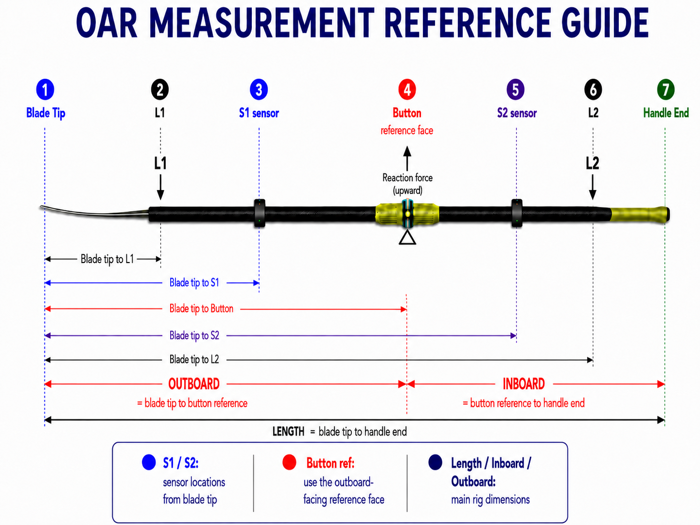

This tab creates a calibration from a known-weight bend test. Many rowers will never need this page if they use the default calibration, a coach-supplied calibration, or a calibration shared from another device.
When to use it
Use Calib - create when you want to create a new Scale Factor from a measured oar setup and a known weight. This is the most technical calibration workflow because it requires both geometry measurements and a controlled bend test.
Basic workflow
Enter or scan the oar setup, including sensor positions, inboard, outboard, load point, support point, and shaft profile.
Enter the known calibration weight and units.
Connect the two sensors and position the oar in the calibration setup.
Use Tare to zero the unloaded bend reading.
Apply the known weight and let the live values settle.
Review bend, calibration moment, Cperm, Keff, and SF.
Press Save to store the completed calibration.

The Create workflow uses seven reference points: Blade Tip, L1 load point, S1 sensor, Button reference face, S2 sensor, L2 support point, and Handle End. L1 is where the known load is applied. L2 is the second support/restraint. The calibration setup requires the order Load L1 < Outboard < Support L2 so the known load and supports create the bend used to solve for the calibration.
Saving the result
After saving, the result becomes a saved calibration that can be selected, edited, exported, printed as a label, or scanned back into another device. The saved calibration can then supply the Scale Factor used for force, work, power, and pSplit magnitude.